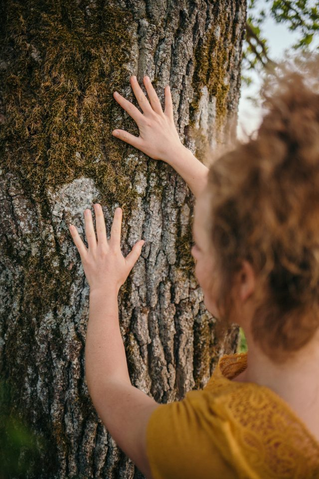
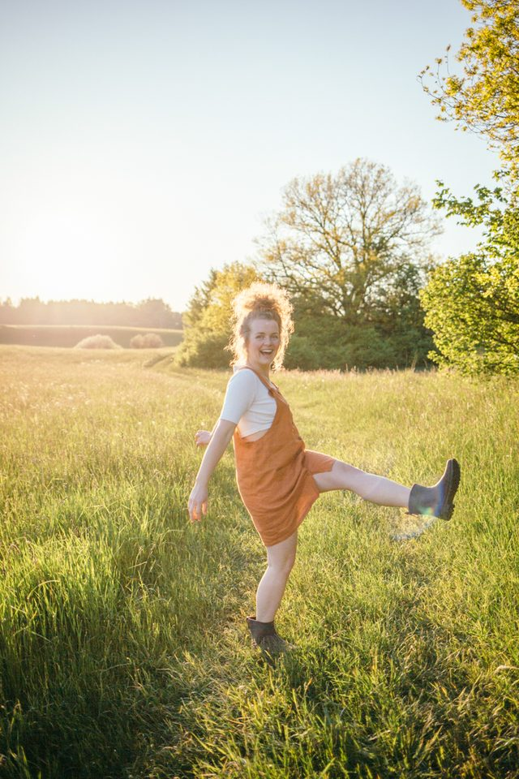
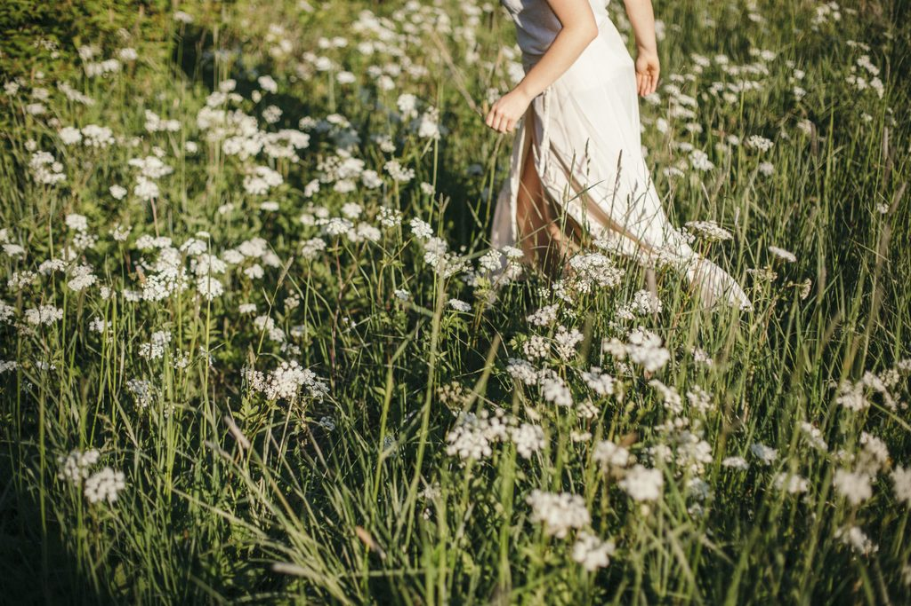

Eine Anleitung zum Einheimisch-Werden.
Wie würde sich dein Alltag anfühlen, wenn du in einer tiefen Beziehung mit deiner Landschaft stehen würdest? Eigentlich fühlst du dich schon naturverbunden — und doch erklingt in dir ein Ruf, dass da noch mehr ist. Ihm zu folgen, ist ein Weg nach Hause.

„Zwischen der Liebe zur Natur, tiefer spiritueller Erfahrung und unserem Moralgefühl besteht eine Verbindung, die ein Kernstück des menschlichen Geistes darstellt.“
Ruf der Erde
Eigentlich fühlst du dich schon sehr naturverbunden. Und doch erklingt in dir ein Ruf, dass da noch mehr ist. Komm, ich nehme dich an die Hand und zeige dir, wie du diesem Ruf folgen kannst.
In der Einzelbegleitung wächst über vier Monate eine tragfähige Verbindung — in deinem Tempo, zu deinen Themen. Wir weben Schritt für Schritt an deinen Verbindungsfäden zur Landschaft, den Pflanzen, den Tieren und den Jahreszeiten, bis Naturverbindung nicht länger ein besonderer Moment ist, sondern dein Boden.
„Ruf der Erde“ ist für Multiplikator:innen und alle, die es werden wollen: für Pädagog:innen, Naturinteressierte, Kräuterkundige und Menschen, die mit Menschen arbeiten — und ihre Verbindung zur Natur noch tiefer in ihr Wirken in der Welt einflechten wollen.

Du darfst dich auf Folgendes freuen

Das beinhaltet „Ruf der Erde“
Wir verbinden praktisches Tun mit fundiertem Hintergrundwissen — und lassen viel Raum für das, was dich ganz persönlich ruft.
- Praktische Übungen, die dich im Fühlen der Verbindung festigen
- Der Aufbau deiner ganz eigenen Naturverbindungs-Routinen
- Die Begleitung deines frei gewählten handwerklichen Projekts
- Hintergrundwissen zu Vogelsprache, Pflanzenwissen und dem Lauf des Jahres
- Eine Schritt-für-Schritt-Anleitung, um in deiner Landschaft einheimisch zu werden
- Raum für deine individuelle Schwerpunktsetzung
Ablauf der Anmeldung
In drei ruhigen Schritten — ganz ohne Druck, in deinem Tempo.
Unverbindlich auf die Warteliste
Trag dich ein — ganz ohne Verpflichtung. So erfährst du, sobald das nächste Mentoring startet.
Kennenlern-Telefonat
Sobald wieder Plätze frei sind, melde ich mich bei dir für ein kurzes, herzliches Telefonat.
Dein individueller Fahrplan
Passt es für uns beide, arbeite ich deinen persönlichen Mentoring-Fahrplan aus. Im Zoom-Gespräch besprechen wir alle Details — dann entscheidest du fundiert.
Das Jahresrad gemeinsam gehen
Manche Wege gehen sich leichter in Gesellschaft. In der Earth Keeper’s Journey wanderst du ein ganzes Jahr im Kreis Gleichgesinnter durch die acht Stationen des Jahreskreises — mit monatlichen Zoom-Treffen und einer lebendigen Gemeinschaft, die mit dir wächst.
Die nächste Runde startet zur Wintersonnwende.

Was Menschen im „Ruf der Erde“ erleben
Ich kann das Naturmentoring absolut jedem empfehlen. Jedes Programm ist individuell auf die Interessen und Bedürfnisse angepasst — da hat Evelyn ein richtig gutes Gespür. Nun weiß ich, was Naturverbindung wirklich bedeutet.
Die Zeit wirkt für mich bis heute nach. Sie hat mich feinfühlig ermutigt, mich neuen Aufgaben zu nähern — inzwischen sehe ich Pflanzen, Vögel, Himmel und Erde mit anderen Augen und Sinnen.
Viele neue Denk- und Handlungsweisen. Ich habe viel über Natur und die persönliche Verbindung zu ihr gelernt. Was Kräuter und Pflanzen angeht, ist sie die Expertin — man kann sie immer fragen.
Trag dich unverbindlich ein
Es gibt keine Verpflichtung und keinen falschen Anfang. Setz dich auf die Warteliste — und ich melde mich bei dir, sobald der nächste „Ruf der Erde“ beginnt.